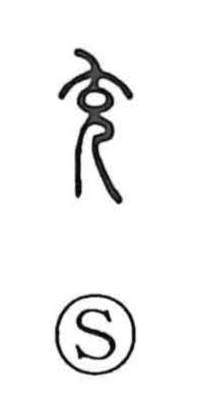

充

Uncategorized
Kun: michiru, mitasu, ateru | On: juu
to fill ・ to be filled ・ to satisfy ・ to assign ・ to allocate ・ to supply
Explanation
The ancient form sketches a stout figure with an especially distended belly. From this image, corpulence was seen as a sign of stored vigor and overflowing energy, giving the character its core sense of fullness and abundance—becoming full and being filled (as in juman) and overflowing (juitsu). Related imagery in 盈 evokes the bulge of thighs immersed in a bath, and expressions like juei originally conjured this bodily plenitude. From the concrete ideas of being full (michiru) and filling, satisfying (mitasu), the meaning naturally broadened to supplying or assigning what is needed for a purpose (as in juto).